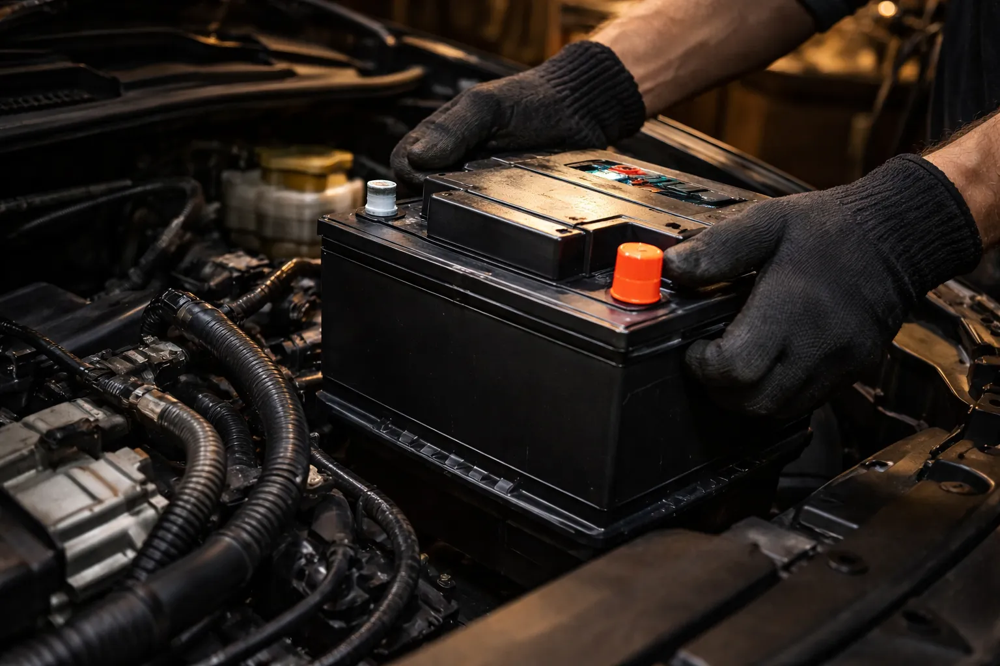
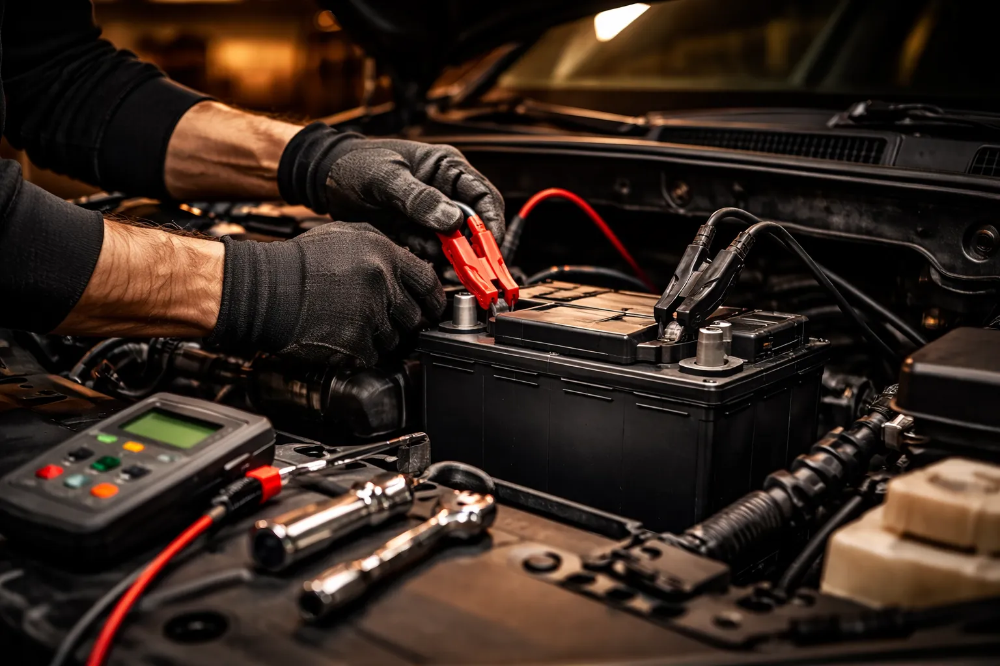

Contrôle et changement de batterie rapide et professionnel. Ali-Ka remet votre véhicule en route à Etterbeek.

Lundi matin, 7h15, il fait -3°C à Etterbeek. Vous tournez la clé dans le contact. Le moteur tousse, hésite… et rien. Juste un cliquetis triste sous le capot. Votre café refroidit dans le gobelet, le tram 81 vient de passer, et vous êtes déjà en retard.
Scénario classique à Bruxelles entre novembre et mars.
Chez Ali-Ka, Avenue des Casernes 10 à Etterbeek, on connaît cette histoire par cœur — on la vit avec nos clients chaque hiver. Test de charge, diagnostic, remplacement de batterie : nous intervenons sur toutes les marques de voitures et utilitaires en 15 à 30 minutes. Pas besoin de poser une demi-journée de congé. On a un stock de batteries prêtes à l'emploi, adaptées aux véhicules les plus courants en Belgique. Vous repartez le matin même, moteur au quart de tour.
Ce que beaucoup ignorent, c'est à quel point le climat bruxellois malmène une batterie. Le froid, l'humidité, la grisaille qui s'installe dès octobre — tout cela pèse. Comme le souligne Europ-Assistance, une batterie peut perdre jusqu'à 60 % de sa capacité par temps froid. Ajoutez à cela les trajets courts et hachés entre Etterbeek, Ixelles, le quartier européen et Schaerbeek — phares allumés, chauffage à fond, essuie-glaces en marche — et votre batterie ne se recharge jamais complètement. Elle s'épuise un peu plus chaque jour, silencieusement, jusqu'au matin où elle lâche.
Un contrôle régulier chez Ali-Ka suffit à éviter ce scénario.
Vous venez pour une vidange ? Un changement de pneus avant l'hiver ? Un contrôle des freins après les vacances ? Pendant qu'on s'occupe de votre véhicule, on branche le testeur sur la batterie. Deux minutes, pas plus.
Si les chiffres montrent une faiblesse — tension qui chute, capacité en dessous du seuil — on vous le dit franchement. Et si un remplacement s'impose, il se fait dans la foulée : batterie neuve de qualité, posée immédiatement, au meilleur prix. Pas de deuxième rendez-vous, pas de perte de temps.
Petite citadine qui se faufile dans les rues d'Etterbeek, berline familiale, SUV, utilitaire de livraison — chaque véhicule a ses exigences. Ali-Ka sélectionne des batteries de marques reconnues, avec la capacité et les dimensions qui correspondent exactement aux spécifications de votre motorisation, essence ou diesel.
Les automobilistes de la Place Jourdan, du Cinquantenaire, de Woluwe-Saint-Pierre et d'Auderghem le savent : quand la batterie lâche, c'est ici qu'on vient.
Et notre travail ne s'arrête pas à la pose. Une fois la nouvelle batterie installée, on vérifie le circuit de charge complet — en particulier l'alternateur. Parce qu'un alternateur fatigué, c'est la cause cachée numéro un d'une batterie qui se vide en boucle. Vous la remplacez, tout semble réglé, et trois mois plus tard, rebelote. Nous, on cherche la vraie raison. On contrôle aussi le démarreur et l'éclairage pour s'assurer que tout le système électrique fonctionne comme il doit. On vérifie également le circuit de climatisation, car un compresseur de clim qui force en permanence fatigue la batterie bien plus vite qu'on ne le croit.
En moyenne 4 à 5 ans. En conduite urbaine à Bruxelles, la durée peut être réduite à cause des trajets courts. Ali-Ka peut tester votre batterie à chaque visite.
C'est souvent la cause, mais le démarreur ou l'alternateur peuvent aussi être en cause. Chez Ali-Ka, nous faisons un test complet pour identifier le problème exact.
Oui, sans rendez-vous. L'intervention prend 15 à 30 minutes. Passez Avenue des Casernes 10, du lundi au vendredi 9h-18h ou samedi 9h-14h.
Le prix dépend du type et de la capacité requise. Ali-Ka propose des batteries de qualité à tarifs compétitifs, pose comprise. Appelez le 02 647 47 01.
Les trajets courts ne permettent pas à l'alternateur de recharger complètement la batterie. En ville à Bruxelles, avec des arrêts fréquents et des accessoires électriques sollicités, la batterie se décharge progressivement. Ali-Ka à Etterbeek teste gratuitement l'état de votre batterie et vous conseille sur le remplacement si nécessaire.